NetScaler Gateway 11 Virtual Server
Navigation
- NetScaler Gateway Universal Licenses
- Create NetScaler Gateway Virtual Server
- Verify SSL Settings
- Gateway Portal Theme
- SSL Redirect
- DNS SRV Records for Email-based discovery
- Block Citrix VPN for iOS
- View ICA sessions
- Customize Logon Page
- UDP Audio Through Gateway
- Unified Gateway
- StoreFront - Rewrite X-Citrix-Via
:idea: = Recently Updated
NetScaler Gateway Universal Licenses
For basic ICA Proxy connectivity to XenApp/XenDesktop, you don’t need to install any NetScaler Gateway licenses on the NetScaler appliance. However, if you need SmartAccess features (e.g. EPA scans) or VPN then you must install NetScaler Gateway Universal licenses. These licenses are included with the Platinum editions of XenApp/XenDesktop, Advanced or Enterprise Edition of XenMobile, and the Platinum version of NetScaler.
When you create a NetScaler Gateway Virtual Server, the ICA Only setting determines if you need NetScaler Gateway Universal licenses or not. If the Virtual Server is set to ICA Only then you don’t need licenses. But if ICA Only is set to false then you need a NetScaler Gateway Universal license for every user that connects to this NetScaler Gateway Virtual Server. Enabling ICA Only disables all SmartAccess, SmartControl, and VPN features. 
If you don't need any non-ICA Proxy features, then you don't need any Gateway Universal licenses, and you can skip to the next section.
The Gateway Universal licenses are allocated to the case sensitive hostname of each appliance. If you have an HA pair, and if each node has a different hostname, allocate the Gateway Universal licenses to the first hostname, and then reallocate the same licenses to the other hostname.
To see the hostname, click the version info on the top right.
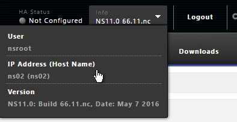
To change the hostname, click the gear icon on the top right.
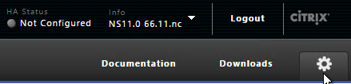
To upload the allocated Gateway Universal licenses to the appliance, go to System > Licenses. A reboot is required.
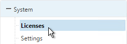
After NetScaler Gateway Universal licenses are installed on the appliance, they won’t necessarily be available for usage until you make a configuration change as detailed below:
- On the left, expand System, and click Licenses.
- On the right, in the Maximum NetScaler Gateway Users Allowed field is the number of licensed users for NetScaler Gateway Virtual Servers that are not set to ICA Only.
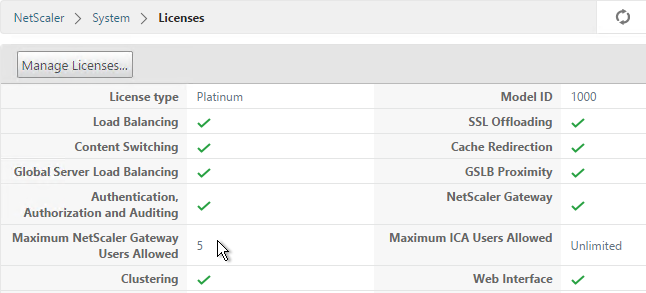
- On the left, under NetScaler Gateway, click Global Settings.
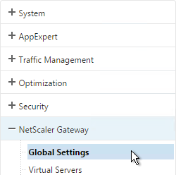
- In the right column of the right pane, click Change authentication AAA settings.
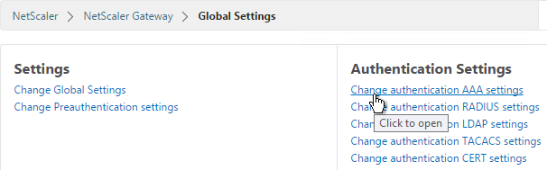
- Change the Maximum Number of Users to your licensed limit. This field has a default value of 5, and administrators frequently forget to change it thus only allowing 5 users to connect.
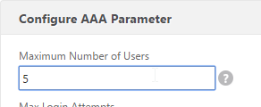
-
If desired, check the box for Enable Enhanced Authentication Feedback. Click OK.
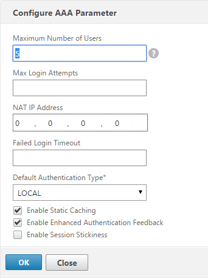
-
Then edit the NetScaler Gateway Virtual Server.
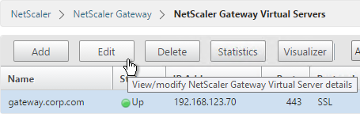
- In the Basic Settings section, click the pencil icon near the top right.
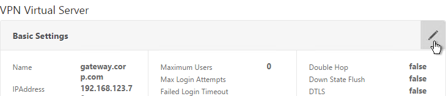
- Click More.
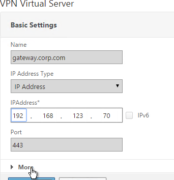
-
In the Max Users field, either enter 0 (for unlimited/maximum) or enter a number that is equal to or less than the number of licensed users. Click OK.
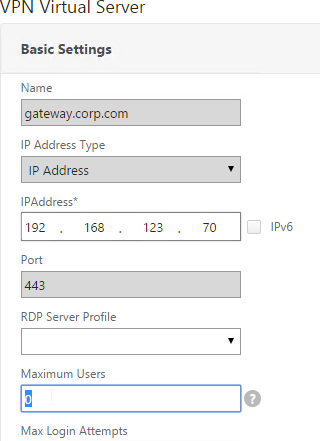
Create Gateway Virtual Server
- Create a certificate for the NetScaler Gateway Virtual Server. The certificate must match the name users will use to access the Gateway. For email discovery in Citrix Receiver, the certificate must have subject alternative names (SAN) for discoverReceiver.email.suffix (use your email suffix domain name). If you have multiple email domains then you’ll need a SAN for each one.

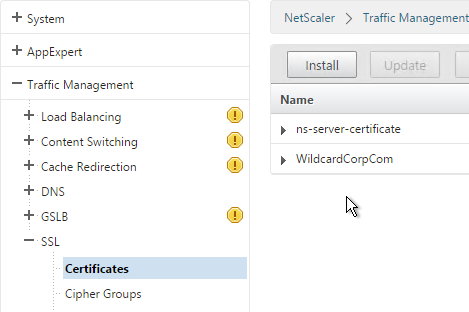
- On the left, right-click NetScaler Gateway and click Enable Feature.
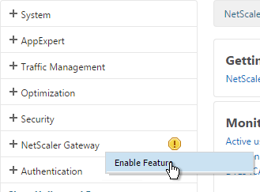
- On the left, expand NetScaler Gateway and click Virtual Servers.
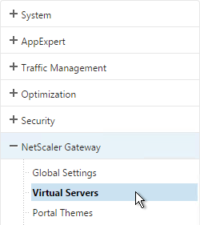
- On the right, click Add.
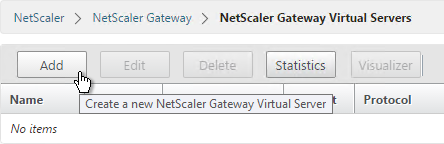
- Name it gateway.corp.com or similar.
- Enter a new VIP that will be exposed to the Internet. Note: new to NetScaler 11.0 is the ability to set it to Non Addressable, which means you can place it behind a Content Switching Virtual Server.
- Click More.
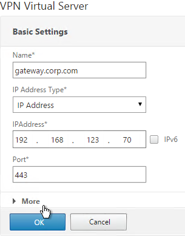
- In the Max Users field enter 0.
- In the Max Login Attempts field, enter your desired number. Then enter a timeout in the Failed Login Timeout field.
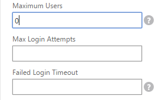
- Check the box next to ICA Only. This option disables SmartAccess and VPN features but does not require any additional licenses.
- Check the box next to DTLS and click OK. DTLS enables UDP Audio and Framehawk. Note: DTLS is not yet supported for double-hop ICA.
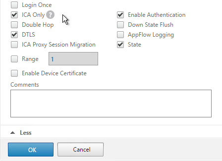
- In the Certificates section, click where it says No Server Certificate.
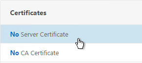
- Click the arrow next to Click to select.
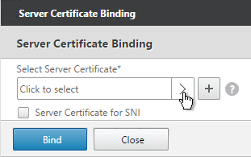
- Select a previously created certificate that matches the NetScaler Gateway DNS name, and click Select.
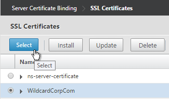
- Click Bind.
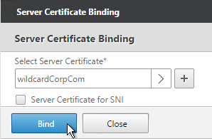
- If you see a warning about No usable ciphers, click OK.
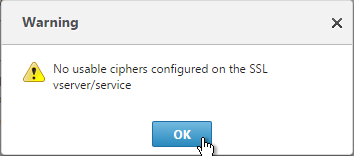
- Click Continue.
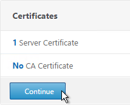
- In the Authentication section, click the plus icon in the top right.
- Note: it's also possible to disable authentication on Gateway and make StoreFront do it instead as described in Citrix CTX200066 How to Log On to StoreFront When Authentication is Disabled on NetScaler Gateway VIP. However, it's more secure to require Gateway to authenticate the users before the user can communicate with StoreFront.
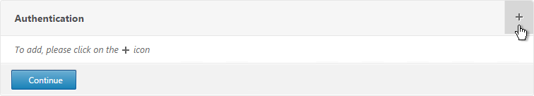
- Select LDAP, select Primary and click Continue.
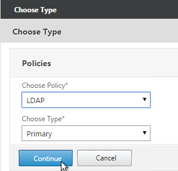
- If you used the authentication dashboard to create the LDAP server then you probably haven’t create the corresponding policy yet. Click the plus icon to create a new policy.
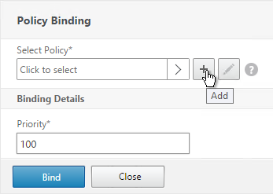
- Use the Server drop-down to select the previously created LDAP server.
- Give the policy a name. It can match the LDAP Server name.
- In the Expression box, enter ns_true or select it from the Saved Policy Expressions drop-down. Click Create.
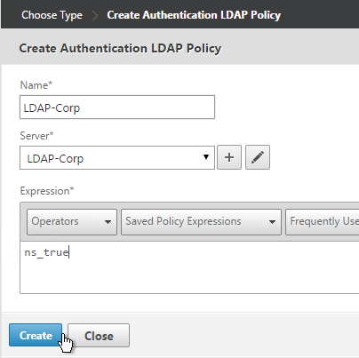
- Click Bind.
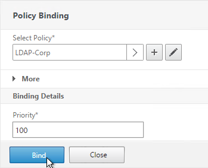
- Or for two-factor authentication, you will need to bind two policies to Primary and two polices to Secondary:
- Primary = LDAP for Browsers (User-Agent does not contain CitrixReceiver)
- Primary = RADIUS for Receiver Self-Service (User-Agent contains CitrixReceiver)
- Secondary = RADIUS for Browsers (User-Agent does not contain CitrixReceiver)
- Secondary = LDAP for Receiver Self-Service (User-Agent contains CitrixReceiver)

- Click Continue.
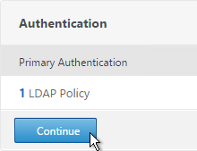
- Scroll down to the Profiles section and click the pencil icon.
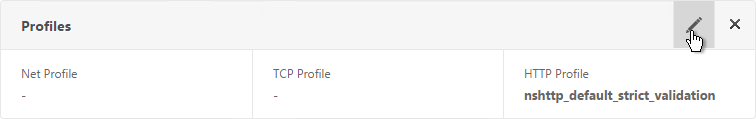
- In the TCP Profile drop-down select nstcp_default_XA_XD_profile and click OK.
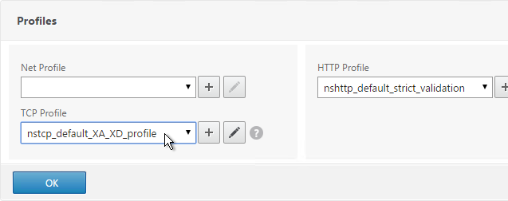
- In the Policies section, click the plus icon near the top right.
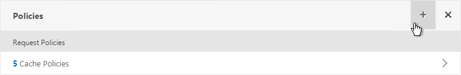
- Select Session, select Request and click Continue.
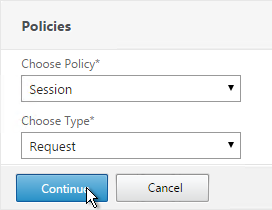
- Click the arrow next to Click to select.
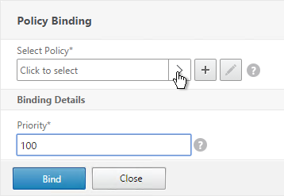
- Select one of the Receiver session policies and click Select. It doesn’t matter which order you bind them.
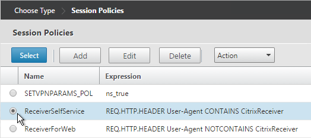
- There’s no need to change the priority number. Click Bind.
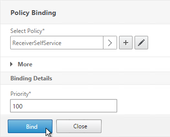
- Repeat these steps to bind the second policy. In the Policies section, click the plus icon near the top right.
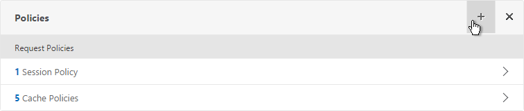
- Select Session, select Request and click Continue.
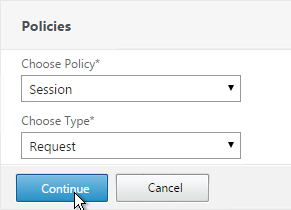
- Click Add Binding.
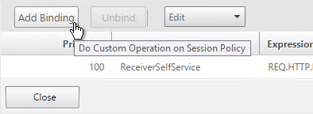
- Click the arrow next to Click to select.
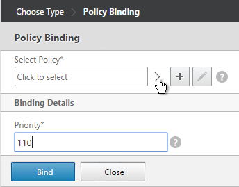
- Select the other Receiver session policy and click Select.
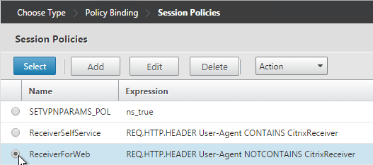
- There’s no need to change the priority number. Click Bind.
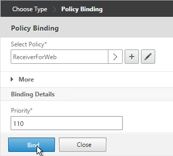
- The two policies are mutually exclusive so there’s no need to adjust priority. Click Close.
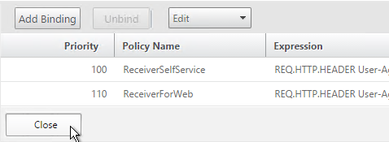
- On the right, in the Advanced Settings section, click Published Applications.
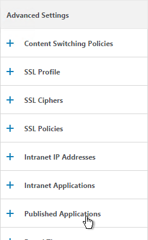
- Click where it says No STA Server.
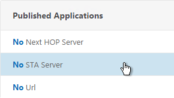
- Add a Controller in the https://
- For the Address Type, select IPV4. Click Bind.
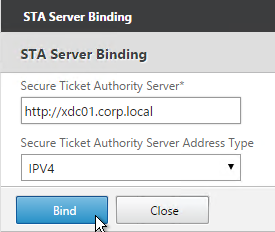
- To bind another Secure Ticket Authority server, on the left, in the Published Applications section, click where it says 1 STA Server.
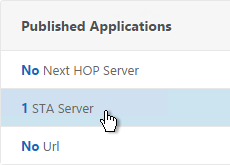
- Click Add Binding. Enter the URL for the second controller.
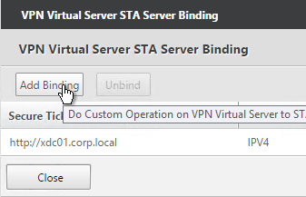
- The State is probably down. Click Close.
- In the Published Applications section, click STA Server.
-
Now they should be up and there should be a unique Auth ID for each server. Click OK.
add vpn vserver gateway.corp.com SSL 10.2.2.200 443 -icaOnly ON -dtls ON -tcpProfileName nstcp_default_XA_XD_profile bind vpn vserver gateway.corp.com -policy "Receiver Self-Service" -priority 100 bind vpn vserver gateway.corp.com -policy "Receiver for Web" -priority 110 bind vpn vserver gateway.corp.com -policy Corp-Gateway -priority 100 bind vpn vserver gateway.corp.com -staServer "http://xdc01.corp.local" bind vpn vserver gateway.corp.com -staServer "http://xdc02.corp.local" bind vpn vserver gateway.corp.com -portaltheme X1 -
If you haven't enabled the Default SSL Profile, then perform other normal SSL configuration including: disable SSLv3, bind a Modern Cipher Group, and enable Strict Transport Security.
bind ssl vserver MyvServer -certkeyName MyCert set ssl vserver MyvServer -ssl3 DISABLED -tls11 ENABLED -tls12 ENABLED unbind ssl vserver MyvServer -cipherName ALL bind ssl vserver MyvServer -cipherName Modern bind ssl vserver MyvServer -eccCurveName ALL bind vpn vserver MyvServer -policy insert_STS_header -priority 100 -gotoPriorityExpression END -type RESPONSE
Verify SSL Settings
After you’ve created the Gateway Virtual Server, run the following tests:
- Citrix CTX200890 – Error: "1110" When Launching Desktop and "SSL Error" While Launching an Application Through NetScaler Gateway: You can use OpenSSL to verify the certificate. Run the command:
openssl s_client -connect gateway.corp.com:443.Replace the FQDN with your FQDN. OpenSSL is installed on the NetScaler or you can download and install it on any machine. - Go to https://www.digicert.com/help/ to verify the certificate chain.
- Go to https://www.ssllabs.com/ssltest/ and check the security settings of the website. Citrix Blogs - Scoring an A+ at SSLlabs.com with Citrix NetScaler – 2016 update

Gateway Portal Theme
Citrix Blog Post Branding your Deployment Part 2: Matching NetScaler to StoreFront explains NetScaler Gateway Portal Themes, how to edit the Portal Theme CSS, and warns about GUI changes overwriting CSS file changes.
If you want the logon page for NetScaler Gateway to look more like StoreFront 3.0, NetScaler 11.0 build 62 and newer have a built-in X1 theme:
- Go to NetScaler Gateway > Virtual Servers and edit an existing Virtual Server.
- On the right, in the Advanced Settings section, click Portal Themes.
- On the left, click where it says No Portal Theme.
- Click to select.
- Select the built-in X1 theme and click Select.
- Click Bind.
-
Click Done.

-
When you access the NetScaler Gateway login page you’ll see the theme.
You can also create your own theme by starting from one of the built-in themes:
- Go to NetScaler Gateway > Portal Themes.
- On the right, click Add.
- Give it a name and select X1 as the Template Theme.
- In the Look and Feel section there are two sub-sections: one for Home Page and one for Other Pages. In each of these sections is an Attribute Legend link that shows you what you can edit.
- The Home Page is for Unified Gateway (aka VPN Clientless Access).
- If you want to modify the logon page, use the Other Pages sub-section.
- Make changes as desired and click OK.
- In the Locale section, select a language and click OK.
- On the right, in the Advanced Settings section, click Login Page.
- Make changes as desired (e.g. Password Field Titles) and click OK.
- At the top of the screen, click the link to Click to bind and view configured theme.
- Select a Gateway Virtual Server and click Preview.
- The logon page is displayed.
- You could go to /var/netscaler/logon/themes/StoreFront3/css and make more changes to custom.css but this file gets overwritten any time you make a change in the Portal Themes section of the NetScaler GUI.

- Citrix CTX209526 NetScaler; How to Copy a Portal Theme from the Device running version 11.0 to another Device running 11.0. :idea:
Jason Samuel - How to fix Green Bubble theme after upgrading to NetScaler 11 Unified Gateway details the following:
- Change the NetScaler Unified Gateway logo to match the older Citrix Receiver logo.
- Restore the older favicon.
- And other observations regarding the Green Bubbles theme in NetScaler 11.0
SSL Redirect - Down vServer Method
This procedure details the Down vServer method of performing an SSL redirect. An alternative is to use the Responder method.
- On the left, expand Traffic Management, expand Load Balancing, and click Virtual Servers.
- On the right, click Add.
- Give it a name of Gateway-HTTP-SSLRedirect or similar.
- Set the IP Address so it matches the VIP of the NetScaler Gateway vServer. Click OK.
- Do not select any services. This redirect only works if the vServer is Down. Click Continue.
- On the right, in the Advanced Settings column, click Protection.
- Enter https://gateway.corp.com or similar into the Redirect URL Click Save.
-
Then click Done.
-
All SSL Redirect Virtual Servers are supposed to be Down. They don’t work if they are not down. By contrast, the Responder method uses redirect Virtual Servers that are Up.
Public DNS SRV Records
For email-based discovery, add a SRV record to each public email suffix DNS zone. Here are sample instructions for a Windows DNS server:
- In Server Manager, click Tools > DNS Manager
- In the left pane of DNS Manager, select your DNS domain in the forward or reverse lookup zones. Right-click the domain and select Other New Records.

- In the Resource Record Type dialog box, select Service Location (SRV) and then click Create Record.

- In the New Resource Record dialog box, click in the Service box and enter the host value _citrixreceiver.
- Click in the Protocol box and enter the value _tcp.
- In the Port number box, enter 443.
- In the Host offering this service box, specify the fully qualified domain name (FQDN) for your NetScaler Gateway Virtual Server in the form servername.domain (e.g. gateway.company.com)

Block Citrix VPN for iOS
Citrix CTX201129 Configuration for Controlled Access to Different VPN Plugin Through NetScaler Gateway for XenMobile Deployments: do one or both of the following:
- Create an AppExpert > Responder > Policy with Action = DROP and Expression =
HTTP.REQ.HEADER("User-Agent").CONTAINS("CitrixReceiver/NSGiOSplugin"). Either bind the Responder Policy Globally or bind it to the Gateway vServers. - In your Gateway Session Policies, do not set the Plugin type to Windows/Mac OS X.

View ICA Sessions
To view active ICA sessions, click the NetScaler Gateway node on the left and then click ICA Connections on the right.
Customize Logon Page
Logon Page Labels
When two factor authentication is configured on NetScaler Gateway, the user is prompted for User name, Password, and Password 2.
The Password field labels can be changed to something more descriptive, such as Active Directory or RSA:
To change the labels, edit a Portal Theme:
- Go to NetScaler Gateway > Portal Themes and edit an existing theme. You can’t edit the built-in themes so you’ll have to create one if you haven’t already.
- On the right, in the Advanced Settings column, click Login Page.
- In the Login Page section, change the two Password fields to your desired text.
- Click OK.
- In the Portal Theme section you can Click to bind and view configured theme to Preview your changes.
- On Platinum Edition appliances, you might have to invalidate the loginstaticobjects Content Group (Optimization > Integrated Caching > Content Groups) before the changes appear. This seems to be true even if Integrated Caching is disabled.
Logon Security Message (Disclaimer, EULA)
You can force users to agree to a EULA before they are allowed to login.
Clicking the Terms & Conditions link allows the user to view the EULA text that you have entered.
Do the following to configure the EULA:
- Go to NetScaler Gateway > Resources > EULA.
- On the right, click Add.
- Give the EULA a name and enter some text. You can even enter HTML code. See the example posted by Chris Doran at Citrix Discussions.
- Click Create.
- Edit a Gateway Virtual Server.
- On the right, in the Advanced Settings column click EULA.
- Click where it says No EULA.
- Click the arrow next to Click to select.
- Select the EULA and click Select.
- Click Bind.
- Mike Roselli at Automatic EULA Acceptance by Cookie Rewrite Guide at Citrix Discussions details Rewrite policies that change the behavior so that users only have to accept the EULA once. It records acceptance in a cookie. :idea:
Logon Page Links
Citrix CTX202444 How to Customize NetScaler Gateway 11 logon Page with Links shows how to add links to the NetScaler Gateway 11 logon page.
- In WinSCP, go to /netscaler/ns_gui/vpn/js and edit the file gateway_login_form_view.js.
- Scroll down to line 40 and insert the code copied from the article. Feel free to change the link.
- Scroll down to line 140 and insert the line form.append(link_container);
- Since this is an if block, insert the line in both the if section and the else section (line 148). Both should be after the append field_login line and before the append(form) line.
- Save the file and verify your results.
- If you reboot your appliance then your changes will be lost. To preserve your changes after a reboot, copy the modified file to /var.
- Then edit /nsconfig/rc.netscaler and add a cp line to copy the modified file from /var to /netscaler/ns_gui/vpn/js. This is the same procedure as older NetScaler firmware. Feel free to reboot your appliance to confirm that the changes are still applied.
Other Customizations
Citrix CTX215817 NetScaler : How to Customize Footer of NetScaler Gateway Login Page. :idea: 
Mike Roselli at Netscaler 11 Theme Customization - How to Add Links and Verbiage at discussions.citrix.com has sample rewrite policies to customize the NetScaler Gateway logon page with additional HTML.
Craig Tolley Customising the NetScaler 11 User Interface – Adding Extra Content: add new sections to login page. These sections pull content from local HTML files.
Daniel Ruiz Set up a maintenance page on Netscaler Gateway: configure a Responder policy (see the blog post for sample HTML code). During maintenance, manually bind the Responder policy to the Gateway. Manually remove the policy after maintenance is complete. :idea:
UDP Audio Through Gateway
From John Crawford at Citrix Discussions and Marius Sandbu Enabling Citrix Receiver audio over Netscaler Gateway with DTLS
Note: If you have NetScaler 11 build 62 or newer then enabling DTLS on the Gateway also enables Framehawk. See VDA > Framehawk for Framehawk configuration.
Requirements for UDP Audio:
- Citrix Receiver 4.2 or newer
- NetScaler Gateway 10.5.e (enhancement build) or NetScaler 11
- UDP 443 allowed to NetScaler Gateway Virtual Server
- UDP 16500-16509 allowed from NetScaler SNIP to VDAs
To enable UDP Audio through Gateway, make changes on both the NetScaler Gateway Virtual Server and in Receiver:
- Edit the NetScaler Gateway Virtual Server. In the Basic Settings section click the edit (pencil) icon.
- Click More.
- Enable the DTLS option and click OK.
- After enabling DTLS, it probably won't work until you unbind the Gateway certificate and rebind it.
Client-side configuration
There are two methods of enabling RTP on the client side:
- Edit default.ica on the StoreFront server
- Use GPO to modify the client-side config
To edit the default.ica file on the StoreFront server (h/t Vipin Borkar): Edit the file C:\inetpub\wwwroot\Citrix\Store\App_Data\default.ica and add the following lines to the Application section:

To use GPO to modify the client-side config:
- Copy the receiver.admx (and .adml) policy template into PolicyDefinitions if you haven't already.
- Edit a GPO that applies to Receiver machines. You can also edit the local GPO on a Receiver machine.
- Go to Computer Configuration > Policies > Administrative Templates > Citrix Components > Citrix Receiver.
- Edit the setting Client audio settings.

- Enable the setting.
- Set audio quality as desired. Higher quality = higher bandwidth.
- Check to Enable Real-Time Transport.
- Check to Allow Real-Time Transport through Gateway. Click OK.

Next step
Configure StoreFront to use NetScaler Gateway
Unified Gateway
Unified Gateway FAQ at docs.citrix.com
The Unified Gateway wizard in NetScaler 11 relies on Clientless Access and the built-in portal. See Jens Trendelkamp NetScaler Gateway Single Sign-On to Storefront in Clientless Access Mode and Citrix CTX202890 How to Integrate StoreFront into Clientless Access Page from NetScaler When Using CVPN to learn how to enable iFrame in StoreFront so it can be embedded in the Clientless Access portal.
Unified Gateway means Content Switching for NetScaler Gateway. There are two methods of Content Switching:
- Create a Content Switching Virtual Server that has a Content Switching policy that directs requests to a NetScaler Gateway
- Create a NetScaler Gateway Virtual Server that has Content Switching policies that direct requests to Load Balancing Virtual Servers.
In either case you can only have one Gateway Virtual Server in the Content Switching configuration.
Content Switching vServer with Gateway as Target
- When creating a Gateway Virtual Server, you can change the IP Address Type to Non Addressable. This means you can only access the Gateway through a Content Switching Virtual Server.
- On the left, go to Traffic management > Content Switching > Policies.
- On the right click Add.
- Give the policy a name.
- Click the plus icon next to the Action field.
- Give the Action a name.
- Change the selection to NetScaler Gateway Virtual Server.
- Click the arrow to select a Gateway Virtual Server and click Create.
-
Back in the policy screen, enter an expression. There are several options for selecting traffic that should be directed to the Gateway:
- Hostname
- The built-in is_vpn_url expression
- Any path that starts with /Citrix/.
-
Click Create when done.
- Add or Edit a Content Switching Virtual Server.
- Click where it says No Content Switching Policy Bound.
- Click the arrow to select a Content Switching policy and click Bind.
Gateway vServer with Load Balancing vServer as Target
Another option is to bind Content Switching policies to a Gateway Virtual Server:
- On the left, go to Traffic Management > NetScaler Gateway > Policies > Content Switching.
- On the right, click Add to create a Content Switching Policy with an Action that points to a Load Balancing Virtual Server.
- On the left, go to NetScaler Gateway > Virtual Servers.
- On the right, edit an existing NetScaler Gateway Virtual Server.
- On the right in the Advanced Settings section, click Content Switching Policies.
- Click where it says No Content Switching Policies.
- Select a Content Switching policy that sends traffic to a Load Balancing Virtual Server and click Bind.
- Repeat for additional Content Switching policies that redirect to Load Balancing Virtual Servers. You cannot bind Content Switching policies that redirect to NetScaler Gateway Virtual Servers.
StoreFront - Rewrite X-Citrix-Via
When NetScaler Gateway communicates with StoreFront, it adds a header called X-Citrix-Via that contains the FQDN entered in the user's address bar. StoreFront uses this header to find a matching Gateway object so StoreFront knows how to handle the authentication. In NetScaler 11.0 and newer, you can create a rewrite policy to change this header. This is useful when changing URLs or using DNS aliases for Gateways. See CTX202442 FAQ: Modify HTTP Header X-Citrix-Via on NetScaler for more details.
Here's a sample rewrite policy for this header:
enable ns feature REWRITE
add rewrite action rwact_storefront replace "HTTP.REQ.HEADER(\"X-Citrix-Via\")" "\"mystorefront.mydomain.com\""
add rewrite policy rwpol_storefront "HTTP.REQ.HEADER(\"X-Citrix-Via\").NE(\"mystorefront.mydomain.com\")" rwact_storefront
bind vpn vserver mygateway-vs -policy rwpol_storefront -priority 100 -type REQUEST